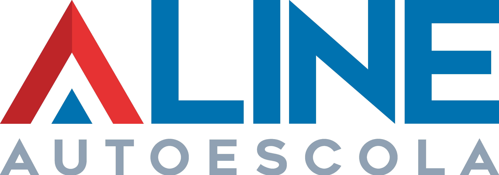

Krissie V.
"Ótimo atendimento, professores muito bons e simpáticos. E um ótimo preço 😁 Sem dúvidas a melhor da cidade 😊😊"
Daniel L.
"Equipe muito prestativa e eficiente, tirei minha habilitação muito rápido. Recomendo a todos na fase de se habilitarem."
Giovanna Q.
"Recepcionista super atenciosa, instrutores muito bem capacitados e simpáticos, ambiente super tranquilo."
Todas as etapas para fazer uma baliza perfeita no exame prático do Detran-SP com o ônix.
Dicas para você ter mais equilíbrio na moto, principalmente durante o exame prático do Detran SP.
Paso-a-Passo de todas as etapas do exame prático de moto do Detran SP em Jaboticabal.
Confira tutoriais, dicas para o exame prático e conteúdo exclusivo para novos condutores. Atualizamos o blog com frequência — vale a pena conferir!